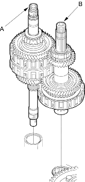
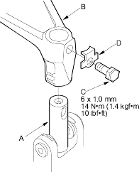

- Install the sub-shaft in the transmission housing, if necessary (7-position) (see page 14-203).
- Install the reverse idler gear in the transmission housing (see page 14-178).
- Assemble the mainshaft sub-assembly (see page 14-192) and countershaft sub-assembly (see page 14-195).
- Install the differential assembly in the torque converter housing.
- Install the mainshaft sub-assembly (A) and countershaft sub-assembly (B) together in the torque converter housing.

- Turn the shift fork shaft (A) so the large chamfered hole is facing the fork bolt hole. Then install the shift fork (B) and reverse selector together on the shift fork shaft and countershaft.
Secure the shift fork to the shift fork shaft with the lock bolt (C) and a new lock washer (D), then bend the lock washer against the bolt head.

- Install the countershaft reverse gear, needle bearing and countershaft reverse gear collar on the countershaft.